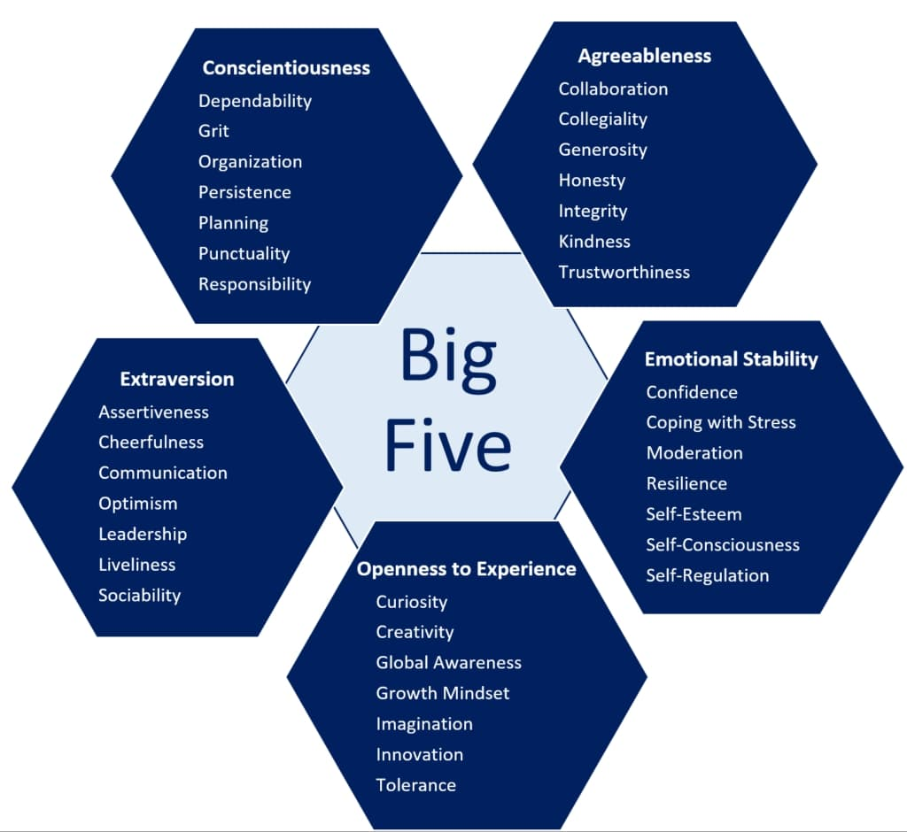

Personality research has generated a variety of different theories that attempt to define and measure personality. The most widely accepted taxonomy of personality among industrial-organizational psychologists is the Big Five Personality Traits model, or the Five Factor Model of personality. The Five Factor Model breaks personality down into five components: Agreeableness, Conscientiousness, Extraversion, Openness, and Neuroticism. Personality tests that are based on this model measure where an individual lies on the spectrum of each of the five traits.
Additionally there is an Interview factor which describes the person’s capability at an interview
Figure 1: Big Five Personality Schema and Sub Traits